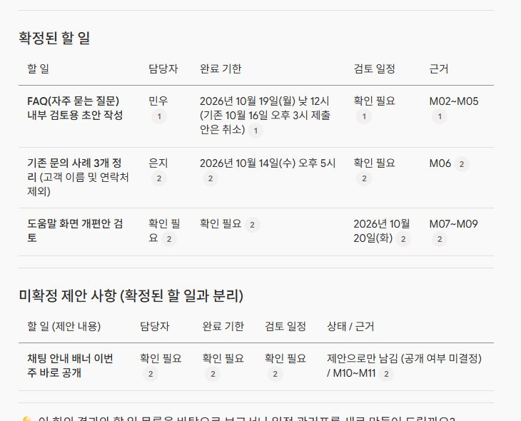

회의 내용에서 담당자와 마감일 정리하기
회의 내용을 다시 읽으며 담당자와 날짜를 찾는 일을 줄여보자. 구글의 노트북 도구에 짧은 연습 자료를 넣고, 할 일 표를 만든 뒤, 중간에 바뀐 마감일까지 원문과 확인하는 수업이다. 실제 텍스트 실습 화면과 복사해 쓸 요청 문장을 함께 담았다. 필요한 것은 긴 명령어를 외우는 능력이 아니라 결과에서 무엇을 확인할지 아는 것이다.

한 번 배워서 다음 회의에도 쓸 순서
오늘의 목표는 세 가지 할 일이 담긴 표 한 장이다. 각 행에는 할 일, 담당자, 완료 기한, 검토 일정, 근거를 넣는다. 날짜가 없으면 빈칸을 그럴듯하게 채우지 않고 ‘확인 필요’로 남긴다. 이렇게 해야 회의가 끝난 뒤 누구에게 무엇을 물어볼지도 보인다.
방법의 출발점은 오빠두엑셀의 음성 자료 가져오기 시연이다. 원영상의 29분 34초 이후에는 공개 청문회 MP3를 넣고 글로 옮긴 자료를 확인한다. 여기서는 별도로 만든 가상 회사 회의 대본을 텍스트로 넣어 정리 과정을 직접 실행했다. 음성을 정확히 받아쓰는 과정은 이번 실습에서 시험하지 않았다. 뒤의 검사 기준표는 사람이 원자료에서 정리한 기준이고, 실제 AI 출력은 별도의 화면으로 보여준다.
파일을 넣기 전에 준비할 것
원영상에는 NotebookLM으로 나오고, 현재 구글 공식 도움말의 이름은 Gemini Notebook이다. 구글 노트북 도구를 열어 본인 화면의 이름을 확인한다. 무료 이용 범위에도 사용량 제한이 있으므로 계정의 Settings → Usage를 먼저 확인한다. 이 수업을 따라 하려고 유료 요금제로 바꾸거나 결제를 추가할 필요는 없다. 사용량을 다 썼다면 다시 이용할 수 있을 때 이어간다.
가상 회의 대본 내려받기에는 실제 고객 정보나 회사 자료가 없다. 가장 쉬운 시작은 이 텍스트 파일을 넣는 것이다. 음성부터 연습하려면 대본을 직접 읽어 MP3나 WAV로 녹음한다. 한 사람이 화자 이름까지 읽어도 되고, M01 같은 검사 번호는 읽지 않는다. 파일 확장자만 mp3로 바꿔서는 녹음 파일이 만들어지지 않는다. 저장한 파일이 실제로 재생되는지 확인한다.
텍스트로 시작하면 ‘내용 정리’를, 직접 녹음하면 ‘말을 글로 옮기기와 내용 정리’를 함께 연습한다. 실제 회의로 옮길 때는 녹음과 외부 AI 업로드가 허용되는지 먼저 확인한다. 처음에는 허용된 연습 파일 하나로 충분하다.
새 노트북에 자료 하나 넣기
- 새 노트북을 만들거나 본인이 소유한 연습용 노트북을 연다.
- 왼쪽의 Add sources, 한국어 화면에서는 자료 추가에 해당하는 버튼을 누른다.
- 회의 대본 텍스트 또는 직접 만든 녹음 파일 하나를 선택한다. 정답 대조표는 넣지 않는다.
- 처리가 끝나면 자료 목록에서 방금 넣은 소스를 연다. 채팅에 사용할 자료도 그 하나만 선택한다.
이번 실제 실습에서는 파일 접근 권한 때문에 파일 선택 방식이 막혀, 출처 추가 → 복사된 텍스트 → 대본 붙여넣기 → 삽입으로 진행했다. 설정을 바꾸지 않고 텍스트 자료를 넣는 방법이다. 새 노트북에 같은 대본 하나만 넣었으며, 아래의 정답 대조표는 입력하지 않았다.
음성을 넣으면 내용을 글로 옮겨 소스로 저장한다. 이 과정을 전사라고 한다. 구글 공식 안내는 MP3·WAV와 한국어 음성 가져오기를 지원한다고 설명한다. 음질이 낮으면 가져오기에 실패할 수 있다. 화면에서 처리 중이라면 기다리고, 실패했다면 파일을 재생해 음성이 들어 있는지부터 확인한다.
전사가 만들어졌다면 곧바로 요약하지 말고 이름과 날짜를 먼저 읽는다. 이 연습의 회의 기준일은 2026년 10월 14일이다. 녹음 속 ‘민우’와 ‘은지’, ‘19일 낮 12시’가 제대로 옮겨졌는지 해당 원음을 다시 들어본다. 글로 옮기는 단계부터 틀렸다면 요약을 여러 번 시켜도 문제가 남을 수 있다.
그대로 넣어볼 요청 문장
채팅창에 아래 문장을 넣는다. 완료 기한과 검토 일정을 다른 열로 지정한 부분이 중요하다. “화요일에 안을 검토하자”와 “화요일까지 개편을 끝내자”는 다른 업무이기 때문이다.
선택한 회의 자료 하나만 사용해 주세요.
최종 결정 사항을 짧게 정리하고, 할 일을 표로 만들어 주세요.
열은 할 일 / 담당자 / 완료 기한 / 검토 일정 / 근거로 해주세요.
앞에서 말한 내용이 뒤에서 수정되면 마지막 결정을 반영하세요.
담당자나 날짜가 없으면 '확인 필요'라고 적으세요.
검토 예정일을 완료 기한으로 바꾸지 마세요.
제안만 나온 일은 확정된 할 일과 분리하세요.
근거는 해당 발언이나 소스 위치를 적고, 자료에 없는 정보는 보태지 마세요.결과가 나오면 먼저 할 일의 수와 이름을 본다. FAQ 초안, 문의 사례 세 개, 도움말 개편안 검토가 각각 있는지 확인한다. 문장과 표 모양이 달라도 괜찮다. 세 가지 실제 업무가 남아 있고, 같은 일이 중복되지 않는지가 먼저다.
직접 실행한 첫 결과
2026년 10월 14일, Gemini Notebook의 새 연습용 노트북에 대본을 넣고 위 문장을 한 번 전송했다. 결과는 확정된 할 일 세 행과 별도의 미확정 제안 표로 나뉘었다. 아래는 응답 영역을 직접 캡처한 화면이다. 글자를 합성하거나 기대 정답으로 바꾸지 않았다.

원문과 대조하니 FAQ의 취소된 16일 기한과 최종 19일 기한이 구분됐고, 도움말 개편의 담당자와 완료 기한은 ‘확인 필요’로 남았다. 배너 공개도 확정된 할 일에 섞이지 않았다. 이번 표에서는 아래 검사 항목과 어긋나는 부분이 없어 수정 요청을 보내지 않았다. 다른 자료에서도 항상 같은 결과가 나온다는 뜻으로 확대하지 않는다.
표가 예쁜지보다 날짜가 맞는지 확인
첫 번째 함정은 바뀐 마감일이다. 원자료 M02에서는 10월 16일 오후 3시를 제안하지만, M04에서 이를 취소하고 10월 19일 낮 12시로 바꾼다. 마지막 결정과 맞아야 한다. 날짜가 19일이어도 업무가 ‘외부 공개’로 바뀌었다면 틀렸다. 원래 업무는 내부 검토용 초안 준비다.
| 할 일 | 담당자와 날짜 | 원자료 |
|---|---|---|
| FAQ 내부 검토용 초안 | 민우 · 10월 19일 낮 12시까지 | M02~M05 · 16일 기한은 취소 |
| 문의 사례 세 개 | 은지 · 10월 14일 오후 5시까지 | M06 · 고객 이름과 연락처 제외 |
| 도움말 개편안 검토 | 검토는 10월 20일 · 담당자와 완료 기한은 확인 필요 | M07~M09 |
두 번째 함정은 정보가 없는 자리다. 도움말 개편안을 검토할 날짜는 정했지만, 담당자와 완성할 날짜는 정하지 않았다. AI가 민우를 담당자로 넣거나 20일을 완료 기한으로 채웠다면 그 칸을 고친다. 여기에서 ‘확인 필요’는 실패 표시가 아니다. 실제로 회의에서 결정하지 않은 정보를 구분한 결과다.
세 번째는 제안과 결정의 차이다. 은지는 채팅 안내 배너 공개를 제안했지만 윤솔은 아직 결정하지 않았다고 답한다. 배너는 미결정 제안으로 남겨야 한다. 확정된 할 일에 ‘이번 주 배너 공개’가 추가돼 있으면 근거 M10~M11을 다시 읽는다.
틀린 부분만 고치고 한 번 더 비교
오류가 있다면 ‘다시 해줘’보다 다른 부분을 구체적으로 말한다. 예를 들어 검토일과 완료 기한이 섞였다면 다음처럼 요청한다. 결과가 처음부터 맞았다면 억지로 수정 단계를 만들 필요는 없다.
도움말 개편 행을 다시 확인해 주세요.
M07~M09에서는 10월 20일을 검토일이라고 했고,
담당자와 완료 기한은 아직 정하지 않았습니다.
근거를 확인해 완료 기한과 검토 일정을 분리하세요.
다른 행은 그대로 두세요.고친 다음에는 해당 행뿐 아니라 다른 날짜도 다시 본다. 수정 요청을 보냈다는 사실보다 실제 표가 바뀌었는지가 중요하다. 원음과 전사가 다르면 원음을 기준으로 자료부터 바로잡고 다시 실행한다. 텍스트 자료로 바꿨다면 그때부터는 텍스트 정리 결과로 구분한다.
짧은 회의는 소스 전체가 근거로 표시될 수 있다. 문장별 인용 링크가 없으면 자료 목록에서 원문을 직접 연다. 중요한 것은 링크 개수가 아니라 담당자·날짜·상태를 발언과 비교할 수 있느냐다.
다른 회의에 옮겨보는 작은 과제
새 텍스트 소스에 “은지가 제품 안내 초안을 맡습니다. 10월 23일에 검토하고 완료 기한은 나중에 정합니다. 민우가 금요일 배포를 제안했지만 아직 결정하지 않았습니다”를 넣어 같은 요청을 해보자. 은지라는 담당자, 23일이라는 검토일, 미정인 완료 기한, 미결정인 배포 제안이 구분되는지 보면 된다.
실제 업무에서도 순서는 같다. 허용된 자료를 넣고, 필요한 항목을 요청하고, 원문과 대조한다. 그 다음에 사람이 검토한 표를 회의록에 옮긴다. AI가 잘 정리한 문장보다 내가 설명할 수 있는 담당자와 날짜가 업무에 쓰기 좋은 결과다.
출처와 연습 자료
대표 그림은 이 글을 위해 AI로 만든 설명용 이미지입니다. 실제 제품 화면이나 실습 결과가 아닙니다. 제목 문구는 편집부가 별도로 배치했습니다.